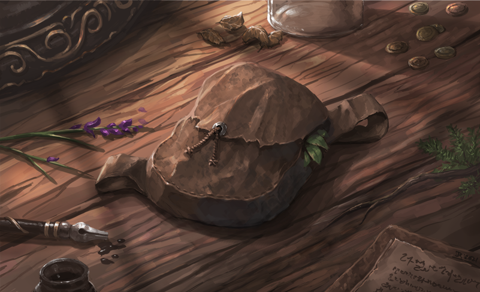

Upon journeys and adventures, characters are often burdened with travelling gear, treasures or strange items of various usefulness. However, characters can only lift so much, their strength determining their maximal weight allowance, including the gear currently worn.
Lifting capacity determines the total weight of all objects upon the character and when they suffer penalties for carrying too much. These are separated into multiple general categories of lifting or carry weight. All lifting calculations are done with pounds (lbs) in mind.
Light Load or lower : A character below their light load is carrying a comfortable amount of things and there are no penalties associated to it. A character that can fly must be in their Light Load to fly.
Light to Medium Load : A character within their light load finds themselves a bit limited in their agile based movements. | - 1 to all Dodge, Movement and Agility based actions and skills.
Medium to Heavy Load : A character within their medium load finds themselves quite limited in their agile movements. | Halve all Dodge, Movement and Agility based actions and skills.
Heavy to Maximum Load : A character within their heavy load is carrying too much to move properly and is heavily burdened. | Dodge and Movement are reduced to 1, can only use non-movement based actions and skills. | Reduce actions per turn to 1.
Maximum Lift : The final state of lifting capacity is what the character can barely lift, but not carry with them. | Cannot move or take any action.
"The burden of adventure is not always in gold, for there are treasures of much greater value to be found.” - The Chronicler
To calculate what are the limits to the character's carrying capacities one must look at one's own strength and strength category.
| STR CAT. | LIGHT | MEDIUM | HEAVY | MAXIMUM |
|---|---|---|---|---|
| Minor | X1 | X2 | X3 | X4 |
| Lesser | X1 | X2 | X4 | X6 |
| Standard | X1 | X2 | X5 | X9 |
| Greater | X2 | X4 | X8 | X15 |
| Superior | X3 | X7 | X12 | X25 |
| Mighty | X5 | X10 | X15 | X50 |
| Legendary | X7 | X15 | X30 | X75 |
| Mythical | X10 | X20 | X50 | X100 |
PIXIE (Male) - An average male pixie has a strength value of 1. It has therefore a lifting base of 1 (1x1). Since the pixie's strength is in the Minor strength category, its light load is 1 lbs. (1x1), medium load is 2 lbs. (1x2), heavy load is 3 lbs(1x3) and it can lift at maximum 4 lbs. (1x4).
HUMAN (Male - Karthian) - An average male human has a strength value of 7. It has therefore a lifting base of 49 (787). Since the male human's strength is in the Standard strength category, its light load is 49 lbs. (49x1), medium load is 98 lbs. (49X2), heavy load is 245 lbs. (49x5) and it can lift at maximum 441 lbs. (49x9).
GRYPHON (Male - Brown) - An average male brown feathered gryphon has a strength value of 13. It therefore has a lifting base of 169 (13x13). Since the gryphon's strength is in the Greater strength category, its light load is 338 lbs. (169x2), medium load is 676 lbs. (169x4), heavy load is 1,352 lbs. (169x8), and it can lift at maximum 2,535 lbs. (169x15).
No matter a character's strength, their carrying amount is unfortunately still limited by their size. A character may only carry so many items of certain sizes. Note that worn armour and clothing does NOT count towards this capacity, but worn items such as swords and backpacks do.
| ITEM SIZE (RELATIVE) | CARRY AMOUNT |
|---|---|
| Tiny | 20 |
| Small | 10 |
| Standard | 5 |
| Large | 2 |